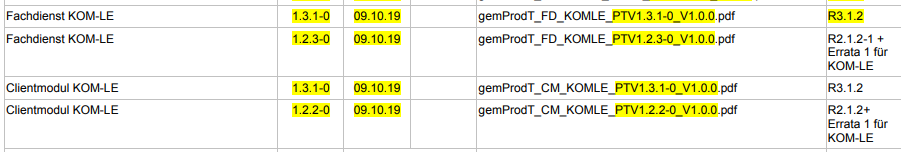
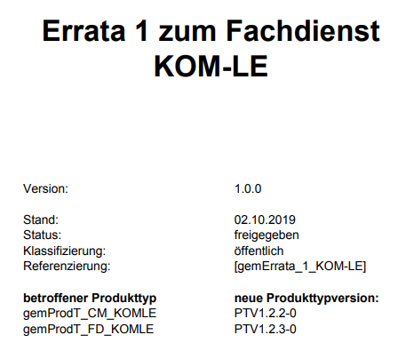

zulassungstest-relevante Abbildung von Errata 1 für KOM-LE
Das Dokument soll die im vorliegenden Errata beschriebenen Änderungen im PET so abbilden, dass Test den funktionalen (Zulassungs-)Test für:
vorbereiten und durchführen kann.
Die zum Errata veröffentlichten Dokumente sind im ELO zu finden:
Dokumentenlandkarte, in der die o.g. neuen Produkttypversionen eingeführt wurden: elodms://3645608

snapshot vom Deckblatt des veröffentlichten Errata's:

Inhaltsverzeichnis
Das TLS-Protokoll in der Version 1.1 verwendet beim Verbindungsaufbau das schwache Hash-Verfahren SHA-1. Aus diesem Grund wird das IETF die TLS Version 1.1 abkündigen [1]. Darüber hinaus haben die namenhaften Webbrowser-Hersteller angekündigt ab 2020 TLS 1.1 nicht mehr zu unterstützen [2]. Des Weiteren schätzt die gematik ein (nach aktuellen Gesprächen mit dem BSI zu dem Thema), dass das BSI in der nächsten Aktualisierung der für die TI normativen TR-03116-1 TLS Version 1.1 für die TI verbieten wird.
Ziel der gematik ist es frühzeitig diese Entwicklung (Abkündigung von TLS 1.1) auch in der Spezifikation widerzuspiegeln.
Primärsysteme können ab dem 01.04.2020 nicht mehr davon ausgehen, dass alle Konnektoren TLS in der Version 1.1 unterstützen.
[1]: https://tools.ietf.org/html/draft-ietf-tls-oldversions-deprecate-05
[2]: https://blog.qualys.com/ssllabs/2018/11/19/grade-change-for-tls-1-0-and-tls-1-1-protocols
Von der Änderung betroffene Dokumente:
in Kapitel 3.3.2 TLS-Verbindungen:
Nach [RFC-5246, Abschnitt 7.4.1.2] muss ein TLS-Client beim Aufbau einer TLS-Verbindung (Handshake) die höchste von ihm unterstützte Version, also Version 1.2, als „favorite choice“ angeben. Mit [RFC-5246, Abschnitt 7.4.1.3] muss ein TLS-Server mit der höchsten von beiden Kommunikationspartnern unterstützten Version antworten, also nach GS-A_4385 Version 1.2. Damit wird zwischen Komponenten und Diensten, die GS-A_4385 umsetzen, nur noch die TLS-Version 1.2 verwendet.
Mittelfristig wird eine vollständige Migration auf TLS Version 1.2 angestrebt (vgl. auch [BSI-TR-02102-2, Abschnitt 3.2]), d. h. außer für den Konnektor und das KOM-LE-CM (s. u. GS-A_5530) wird die grundsätzliche Unterstützung von TLS-Version 1.1 freigestellt, und in einer späteren Migrationsphase wird diese Unterstützung (bzw. die Verwendung) untersagt.
GS-A_4386
Alle Produkttypen, die Übertragungen mittels TLS durchführen, KÖNNEN die TLS-Version 1.1 [RFC-4346] unterstützen (oder auch nicht). <=
Da alle aktuellen Webbrowser (vgl. Übersicht unter https://www.ssllabs.com/ssltest/clients.html und https://en.wikipedia.org/wiki/Comparison_of_TLS_implementations ) seit längerem TLS-Version 1.2 unterstützen ist eine Forderung der Unterstützung von TLS-Version 1.1 bei Diensten innerhalb der TI, die u. Um. von einem Primärsystem aus mittels eines Webbrowsers kontaktiert werden (bspw. VZD), nicht notwendig.
Komponenten, die direkt mit einem Primärsystem per TLS in Verbindung treten, sollen zunächst weiterhin die TLS-Version 1.1 unterstützen, um eine größtmögliche Interoperabilität zu erreichen.
GS-A_5530
Der Konnektor und das KOM-LE-CM MÜSSEN die TLS-Version 1.1 unterstützen. <=
A_18464
Alle Produkttypen, die Übertragungen mittels TLS durchführen, DÜRFEN NICHT die TLS-Version 1.1 [RFC-4346] unterstützen. <=
In Kap. 4.1.1
TIP1-A_4962
Das Primärsystem SOLL die TLS-Authentisierungsmethoden der Stufen 2 oder 4 aus Tabelle Tab_ILF_PS_Konfigurationsvarianten_HTTP und Stufe 2 aus Tabelle Tab_ILF_PS_Konfigurationsvarianten_CETP verwenden, d. h. TLS mit Server-Authentisierung mit oder ohne Client-Authentisierung.
Der Konnektor kann nur noch in den Produkttypversionen 1 und 2 die TLS-Version 1.1 anbieten. Nur mit diesen Produkttypversionen kann das PS auch TLS-Version 1.1 verwenden. Ab der Konnektor-Produkttypversion 3 bietet der Konnektor TLS nur noch gemäß TLS-Version 1.2 oder 1.3 an. Ab PTV3 MUSS das PS für TLS-gesicherte Verbindungen mindestens TLS Version 1.2 verwenden, es KANN auch TLS Version 1.3 verwenden.
<=
in Kapitel 2.4.5.1 Sicherung der administrativen TLS-Verbindung
Nach [TIP1-A_3415] sind Netzwerkverbindungen grundsätzlich mit den in [gemSpec_Krypt] genannten Verfahren zu sichern. Die Verbindung zu den Netzwerk-basierten Managementschnittstellen ist immer mit TLS 1.1 gemäß [RFC4346] zu sichern [gemSpec_Krypt#GS-A_4386]. Um die Zukunftsfä-higkeit zu gewährleisten sollen sie auch mittels TLS 1.2 gemäß [RFC5246] gesichert werden können [gemSpec_Krypt#GS-A_4385].
TIP1-A_3231-01
Das eHealth-Kartenterminal MUSS als Authentisierungsverfahren für administrative TLS-Verbindungen mindestens einseitige Authentisierung einsetzen.
<=
in Kapitel 2.4.4 Sicherheitsanforderungen LAN-gekoppelter Terminals
(…)
Für die Sicherung der hierfür notwendigen Netzwerkkommunikation sindist für alle Kartenterminals die in [gemSpec_Krypt] genannten Verfahren TLS 1.1 (Transport Layer Security) gemäß [RFC4346] [gemSpec_Krypt#GS-A_4386] als einheitliches auf Zertifikaten basierendes Verfahren vorgegeben. Um die Zukunftsfähigkeit zu gewährleisten, soll zusätzlich auch TLS 1.2 gemäß [RFC5246] unterstützt werden [gemSpec_Krypt#GS-A_4385].
(…)
Als KANN-Anforderung wird TLS in der Version 1.3 für alle Produkttypen der TI zugelassen.
Von der Änderung betroffene Dokumente:
in Kap. 3.3.2
A_18467
Alle Produkttypen, die Übertragungen mittels TLS durchführen, KÖNNEN die TLS-Version 1.3 [RFC-8446] unterstützen, falls sie
A_17322
Alle Produkttypen, die Übertragungen mittels TLS durchführen, MÜSSEN sicherstellen, dass sie nur (durch andere Anforderungen) zugelassene TLS-Ciphersuiten bzw. TLS-Versionen anbieten bzw. verwenden.
<=
Bei den Performance-Kennzahlen für den KOM-LE-Fachdienst wurden falsche Schnittstellen definiert. Diese werden korrigiert.
in Anhang C von gemSpec_Perf V2.4.0:
Es werden folgende Werte in der Tabelle: Tab_gemSpec_Perf_Performance-Kenngroessen angepasst:
PDT24-S17-D2-G27 -> PDT24-S01-D2-G27
PDT24-S17-D2-G03 -> PDT24-S01-D2-G03
PDT24-S17-D2-G28 -> PDT24-S01-D2-G28
Sicherheitsrelevante Anforderungen aus der Spezifikation des Fachdienstes für KOMLE wurden nicht dem Sicherheitsgutachten (oder in zwei Fällen nicht zumindest dem funktionalen Test) zugeordnet, sondern nur der Hersteller-/Anbietererklärung oder Test.
Fünf Anforderungen werden in den Steckbriefen (Anbieter und Produkt) einem anderen bzw. teilweise einem weiteren Prüfverfahren zugeordnet:
KOM-LE-A_2185 - ProdT: SiGu statt HE ; AnbT: neu SiGu
KOM-LE-A_2189 - ProdT: Test statt HE
KOM-LE-A_2162 - ProdT: Test statt HE
KOM-LE-A_2164 - ProdT: SiGu statt HE ; AnbT: neu SiGu
KOM-LE-A_2166 - ProdT: SiGu zusätzlich zu Test ; AnbT: neu SiGu
>> Hinweis:
Die folgenden Anforderungen stammen zwar aus gemSpec_FD_KOMLE Version 1.8.0 (aus R3.1.2), haben jedoch noch denselben Inhalt wie in gemSpec_FD_KOMLE Version 1.7.0 (in R2.1.2 und R2.1.2-1). Nur die Zuordnungen zu Prüfverfahren sind wie hier beschrieben verändert.
KOM-LE-A_2166
Der KOM-LE-Fachdienst DARF das Ändern oder Löschen der bei ihm gespeicherten Passwörter der KOM-LE-Konten durch Dritte NICHT zulassen.
<=KOM-LE-A_2162
Die Fachanwendung KOM-LE MUSS gewährleisten, dass Passwörter der Teilnehmer nur vertraulichkeits-, integritäts- und authentizitätsgeschützt vom Client zum Fachdienst übermittelt werden.
<=KOM-LE-A_2185
Der Mail Server des KOM-LE-Fachdienstes MUSS ausschließlich Nachrichten, die innerhalb der TI versendet werden, verarbeiten. Der Zugriff auf einen Mail Server von außerhalb der TI ist nicht zulässig.
<=KOM-LE-A_2164
Der Fachdienst KOM-LE DARF Passwörter der KOM-LE-Teilnehmer NICHT im Klartext speichern.
<=KOM-LE-A_2189
Beim Aufbau der TLS-Verbindung mit dem Verzeichnisdienst MUSS sich der Fachdienst KOM-LE mit seinem C.FD.TLS-C Client-Zertifikat authentifizieren.
<=